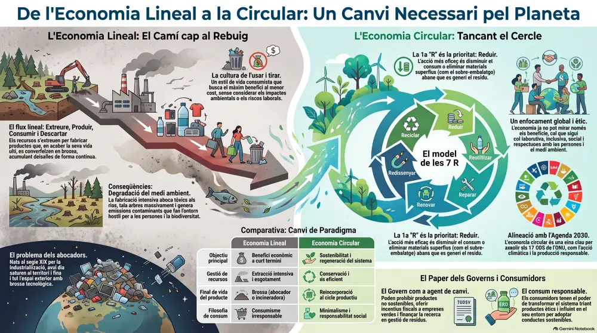
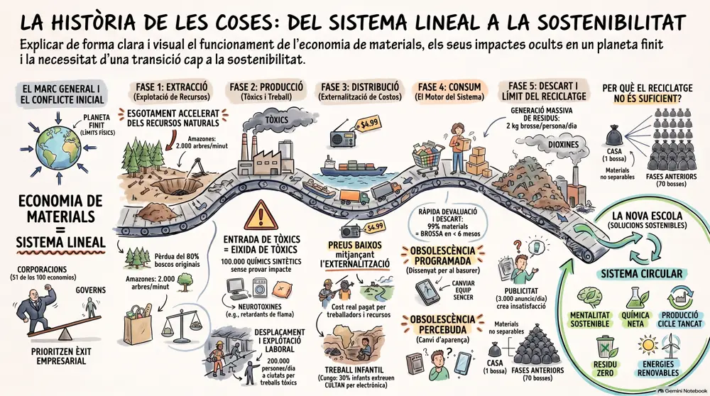

RA1 · 6 hores
Tema 1. Economia lineal i economia circular
Al final del tema sabràs explicar les diferències entre els dos models i per què l'economia circular és millor per al medi ambient i el desenvolupament sostenible.
- Identificar les etapes típiques de l'economia lineal i de la circular.
- Analitzar cada etapa i com afecta el medi ambient.
- Valorar la importància del reciclatge.
- Reconèixer processos reals d'economia lineal.
- Reconèixer processos reals d'economia circular.
- Comparar els dos models segons l'impacte ambiental i els ODS.
1. Introducció
Durant dècades el sistema productiu s'ha basat en l'economia lineal (EL): es dissenyen i es fabriquen productes en massa i, quan s'han utilitzat, es llencen. El resultat és una gran quantitat de residus, la degradació del medi ambient i l'empobriment de moltes zones del planeta.
Per això els estats aposten ara per l'economia circular (EC): passar d'un model extractiu a un de producció neta. Les Nacions Unides han impulsat l'Agenda 2030, que es concreta en els Objectius de Desenvolupament Sostenible (ODS). Si s'aplica a tots els sectors, no només millora el medi ambient sinó que també crea molts llocs de treball nous.
2. Economia lineal i economia circular
Economia lineal
Extreure → Produir → Consumir → Llençar. Els productes es dissenyen per a un sol cicle d'ús i acaben com a residu. Un telèfon intel·ligent es fabrica amb més de cinc-centes substàncies diferents, i això genera molta contaminació.
Economia circular
Dissenyar → Produir → Consumir → Reutilitzar → Reciclar → tornar al cicle. Al final de la vida útil s'aprofiten els components que encara serveixen, i s'evita l'obsolescència programada.

Digues si cada cas és economia lineal o circular: a) una ampolla de plàstic d'un sol ús; b) un mòbil amb peces que es poden canviar; c) una samarreta de moda ràpida; d) un servei de lloguer de patinets.
Veure la solució
Les 10 R de l'economia circular
Són estratègies que s'agrupen en tres fases: disseny, consum i residu.
| R | Què vol dir | Exemple |
|---|---|---|
| Rebutjar | No comprar el que no es necessita | Evitar les bosses de plàstic d'un sol ús |
| Repensar | Compartir en lloc de posseir | Cotxes i bicicletes compartits |
| Reduir | Produir només el que es demana | Fabricació sota demanda; la IA prediu el consum |
| Reutilitzar | Tornar a usar el mateix producte | Envasos retornables |
| Reparar | Allargar la vida del producte | El dret a reparar a la Unió Europea |
| Recondicionar | Revisar i tornar a vendre | Dispositius refurbished |
| Remanufacturar | Fer productes nous amb peces d'altres | Plàstics reciclats en productes nous |
| Replantejar | Donar un altre ús al que no serveix | Objectes reconvertits |
| Reciclar | Recuperar materials valuosos | Bateries recarregables 18650 |
| Recuperar | Últim recurs si les altres fallen | Incinerar per aprofitar-ne l'energia |
Quina R aplica cada persona? a) Rebutja una bossa de plàstic a la botiga; b) compra un portàtil revisat per una empresa especialitzada; c) porta la cadira trencada al taller; d) porta la seva ampolla de casa.
Veure la solució
3. Models d'empresa i repercussió en el medi ambient
Les empreses poden operar de set maneres diferents, cadascuna amb un impacte ambiental propi.
| Model | Com funciona | Impacte |
|---|---|---|
| Extractiu | Explota recursos naturals (petroli, minerals, fusta) | Deforestació, degradació del sòl, contaminació de l'aigua i emissions |
| Producció convencional | Produeix sense considerar gaire l'impacte ambiental | Residus, sobreexplotació de recursos |
| Producció neta | Minimitza els impactes amb pràctiques i tecnologies sostenibles | Menys emissions i menys residus |
| Economia circular | Tanca el cicle de vida dels materials | Menys matèries primeres verges i menys pressió sobre els ecosistemes |
| Negoci verd | Ven productes i serveis ecològics i energies renovables | Impacte ambiental positiu o reduït |
| Responsabilitat social corporativa | Integra l'impacte social i ambiental amb els objectius econòmics | Polítiques de sostenibilitat i transparència |
| Serveis o recursos compartits | Ven l'ús, no el producte (lloguer, vehicles compartits) | Menys demanda de productes nous |
Minar criptomonedes consumeix molta energia. Amb quin model d'empresa de la taula relacionaries una empresa que només busca el màxim benefici, sense mirar el seu impacte? I quin canvi la faria més sostenible?
Veure la solució
4. Importància del reciclatge i dels materials sostenibles
- Conserva recursos escassos. Reutilitzar materials evita extreure'n de nous i el transport de matèries primeres d'altres països.
- Redueix costos. Un material reciclat pot sortir més barat d'extreure, transportar i processar.
- Crea ocupació local. Recollida, classificació i fabricació amb materials reciclats.
- Abarateix la gestió de residus. Menys deixalles als abocadors.
Un material sostenible necessita poca o gens d'energia per generar-se, pot tenir moltes vides (reciclatge, compostatge, reutilització), compleix la normativa europea i espanyola i no està pensat per a l'obsolescència programada.

Per què reciclar no és suficient per tenir una economia circular?
Veure la solució
5. Processos reals basats en EL i en EC
Exemples d'EL
- Moda ràpida. Roba barata de vida curta que es llença després de poques vegades d'ús.
- Envasos d'un sol ús. No es recicla el 100 % del que es comercialitza.
- Automoció. Es pot reciclar només un 75 % dels components.
- Electrònica. Dispositius que queden obsolets ràpidament.
- Agricultura convencional. Pesticides i fertilitzants que contaminen sòl i aigua.
Exemples d'EC
- Disseny per reciclar. L'alumini i el vidre es reciclen millor que els plàstics.
- Recondicionament. Mòbils i portàtils reparats i revenuts.
- Lloguer i ús compartit. Per exemple, patinets elèctrics a les ciutats.
- Ecodisseny. Pensar en tot el cicle de vida del producte.
- Segona mà. Allarga la vida útil i crea ocupació local.
Dos casos clàssics: l'obsolescència programada de les bombetes (EL) i els telèfons amb peces reemplaçables de Fairphone (EC). Un producte circular ha d'estar dissenyat per durar, per actualitzar-se amb connectors estàndard (com l'USB) i per poder-se reparar.
Explica en dues línies per què un mòbil amb peces reemplaçables és un exemple d'economia circular i una bombeta feta per fondre's aviat, d'economia lineal.
Veure la solució
6. Comparativa i Objectius de Desenvolupament Sostenible
| Aspecte | Economia lineal | Economia circular | ODS relacionat |
|---|---|---|---|
| Consum de recursos | Alt: es parteix sempre de matèria primera nova | Baix: els materials es mantenen en el cicle | 12. Producció i consum responsables |
| Residus | Molts, acaben a l'abocador | Minimitzats, es reaprofiten | 12. Producció i consum responsables |
| Emissions i clima | Més emissions per extreure i fabricar | Menys emissions i menys energia | 13. Acció pel clima |
| Ecosistemes | Deforestació i contaminació de sòl i aigua | Menys pressió sobre el territori | 15. Vida dels ecosistemes terrestres |
L'Agenda 2030 de les Nacions Unides és un pla d'acció a favor de les persones, el planeta i la prosperitat. Aquí ens centrem en els ODS 12, 13 i 15.
Relaciona cada acció amb un ODS (12, 13 o 15): a) reduir els residus d'envasos; b) disminuir les emissions de CO₂ de la fabricació; c) evitar la tala d'arbres per obtenir fusta.
Veure la solució
7. Per saber-ne més
- Parlament Europeu: economia circular, definició i beneficis (en anglès).
- Nacions Unides: els 17 Objectius de Desenvolupament Sostenible.
- Fundació Ellen MacArthur, referent mundial en economia circular (en anglès).
- The Story of Stuff, el projecte de La història de les coses (en anglès).